Installing Raspberry Pi OS Lite on a Raspberry Pi Zero
Flash Raspberry Pi OS Lite onto a microSD card for a Raspberry Pi Zero / Zero W / Zero 2 W using Raspberry Pi Imager, then configure Wi-Fi and SSH by hand with raspi-config so the Pi can be used headlessly from then on.
Phase 1: What You Need
- A Raspberry Pi Zero, Zero W, or Zero 2 W
- A microSD card (8 GB minimum, 16 GB+ recommended)
- A computer with an SD card reader (built-in or USB adapter)
- A USB cable/adapter to power the Pi
- A mini HDMI to HDMI adapter/cable and a monitor, plus a micro-USB OTG adapter and USB keyboard — needed once, for the initial
raspi-configsetup (see Phase 6) - Wi-Fi network details (SSID and password), if using a wireless model
- Internet access on your computer to download the imaging tool
Raspberry Pi OS Lite has no desktop environment. It is ideal for the Pi Zero because of its limited RAM and CPU, and it is well suited to headless projects (servers, IoT devices, sensors).
Phase 2: Install Raspberry Pi Imager
- Go to the official Raspberry Pi software page and download Raspberry Pi Imager for your operating system (Windows, macOS, or Linux).
- Install and open the application.
Raspberry Pi Imager walks you through the whole process as a step-by-step wizard, shown as a list on the left (Device → OS → Storage → Customisation → Writing → Done). The current step is always highlighted in red.
Phase 3: Flashing the OS
1Choose the Device
- Open Raspberry Pi Imager.
- Click Choose Device.
- Select your exact model from the list:
- Raspberry Pi Zero (also covers Zero W and Zero WH)
- Raspberry Pi Zero 2 W
- Click Next.
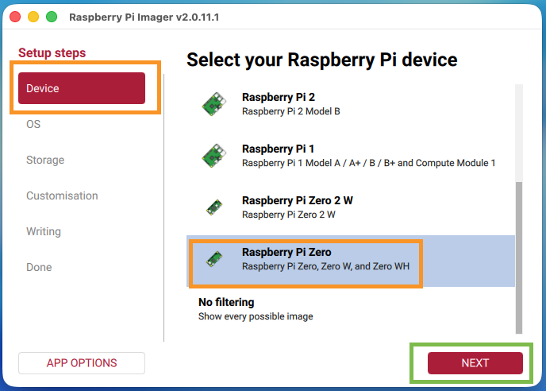
2Choose the OS
- Click Choose OS.
- Select Raspberry Pi OS (other) — this reveals additional, more specific OS builds.
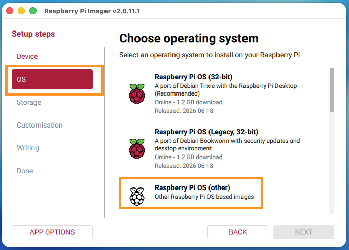
- From the submenu, select Raspberry Pi OS Lite (32-bit), then click Next.
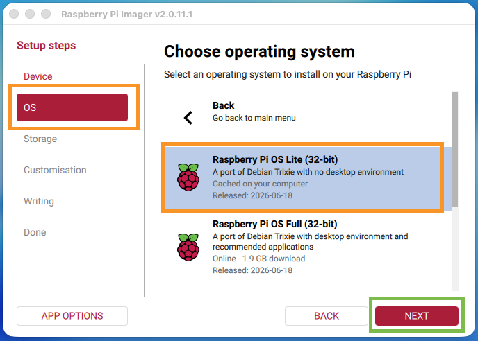
The Pi Zero's ARM11/ARM Cortex-A53 processor is 32-bit friendly, so the 32-bit build is the standard recommended choice, even on the Zero 2 W.
3Choose the Storage
- Insert the microSD card into your computer.
- Click Choose Storage.
- Select the correct microSD card, then click Next.
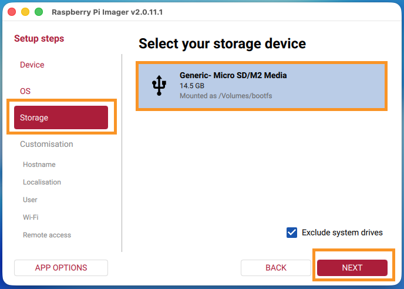
Double-check you have selected the correct drive. A later step will erase all data on the selected storage device.
Phase 4: Customisation — Hostname, Localisation & User Account
After Storage, the wizard moves into the Customisation section. Here you set the Pi's hostname, locale, and login so it's ready to log into from the very first boot. Each item below is its own page in the sidebar, but they're all part of the same Customisation step.
Hostname
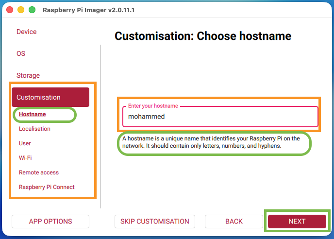
pizero). As the on-screen tip explains, it should contain only letters, numbers, and hyphens. You'll use this name later to connect over SSH (ssh user@<hostname>.local), so it's worth choosing something memorable.
A hostname is the human-readable name a device identifies itself by on a network — an alternative to remembering its numeric IP address (e.g. 192.168.1.42), which can change each time the device reconnects. On most home/school networks, devices are also reachable via <hostname>.local (using mDNS/Bonjour) instead of typing the IP each time.
Where you'll use it:
- Connecting over SSH from your computer:
ssh <username>@<hostname>.local(see Phase 7). - Identifying the Pi on your router's device list or network scanner, especially useful when you have several Pis on the same network — each should get its own unique hostname.
- The terminal prompt on the Pi itself shows the hostname (e.g.
pi@pizero:~$), which is handy for confirming which device you're logged into when working with multiple Pis at once.
Choose something distinct from the defaults other students in the room might use (e.g. include your name or student ID) to avoid two Pis claiming the same hostname on the shared network, which can cause <hostname>.local to resolve to the wrong device.
Localisation
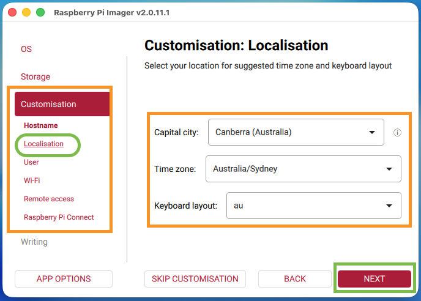
Australia/Sydney and the au keyboard layout). Getting the time zone right matters for anything time-sensitive (logs, scheduled tasks); getting the keyboard layout right matters if you ever type on the Pi directly, since it affects which characters symbols like @ and " produce.
User
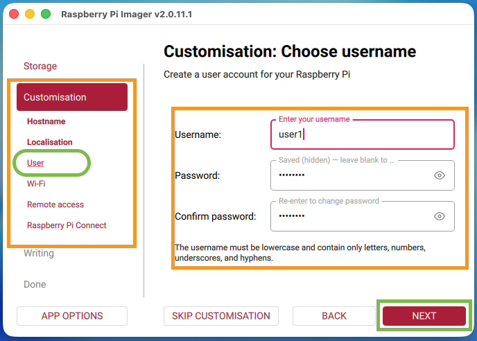
pi/raspberry) — recent Raspberry Pi OS versions no longer ship a default account at all, so you must set one here or you won't be able to log in. The username must be lowercase and contain only letters, numbers, underscores, and hyphens.
Wi-Fi
Wi-Fi and SSH are deliberately left disabled in this step — you'll enable them yourself afterwards using raspi-config (Phase 6), as practice with headless administration from the command line. Until then, the Pi needs a monitor and keyboard connected directly (see Phase 6).
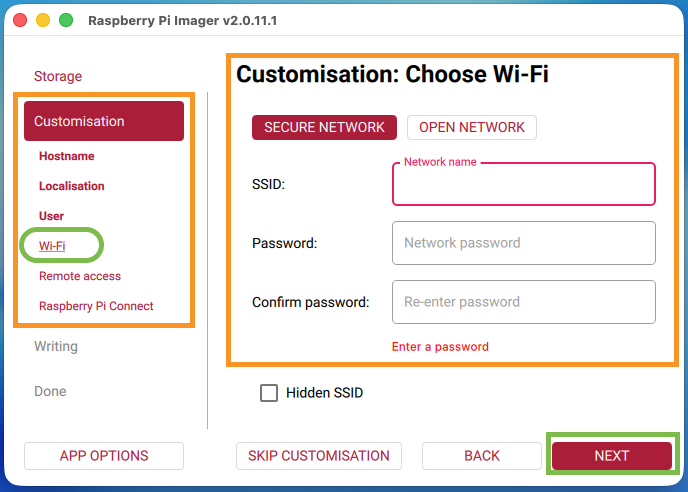
raspi-config.
Remote Access (SSH)
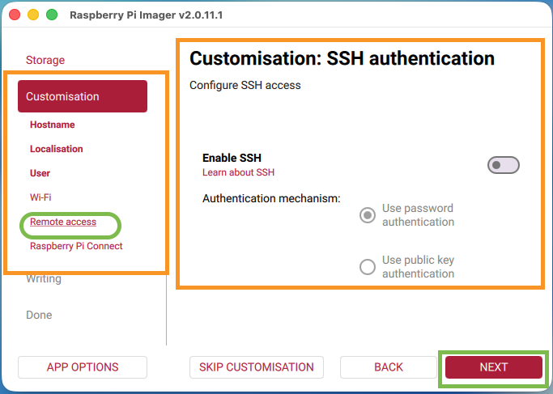
raspi-config.
Raspberry Pi Connect
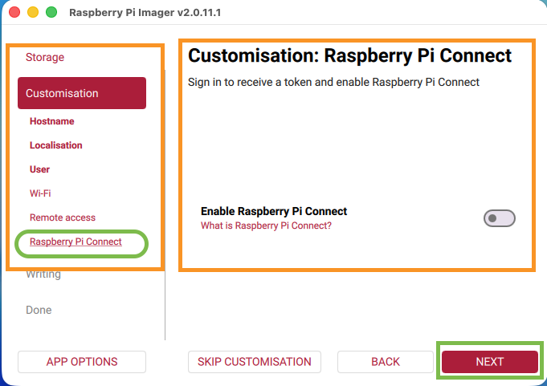
Phase 5: Write the Image
Once all Customisation pages are filled in, move to the Writing step.
- Review the Write image summary screen, which lists your chosen device, OS, storage, and the customisations that will be applied. Click Write.
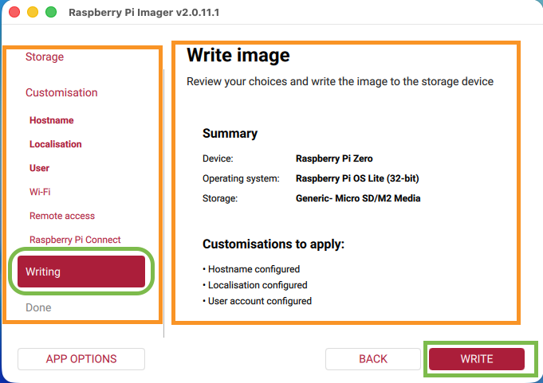
- Confirm you want to erase the storage device by clicking I understand, erase and write.
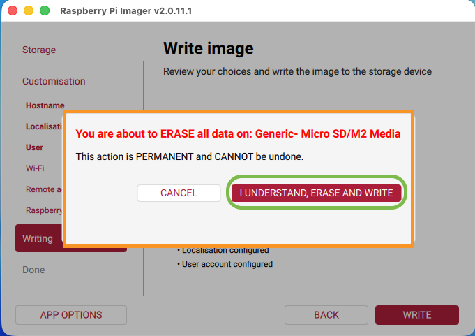
- Wait while the Imager writes the image to the card.
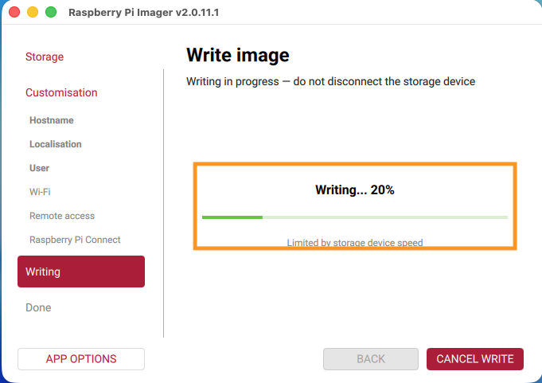
- The Imager then automatically verifies the written data.
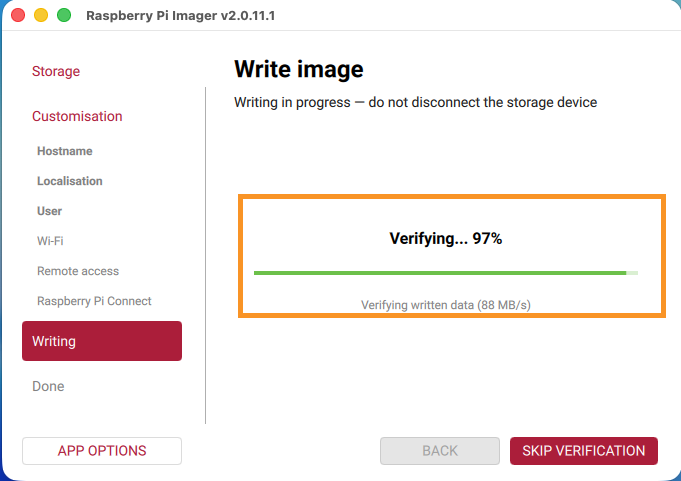
- When both steps complete, Raspberry Pi Imager confirms it is safe to remove the SD card.
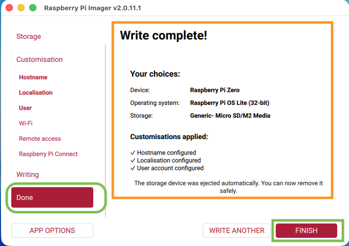
Phase 6: First Boot & Initial Configuration (raspi-config)
Because Wi-Fi and SSH were left disabled in Phase 4, the Pi needs a monitor and keyboard connected directly for this one-time setup. Once Wi-Fi and SSH are enabled below, you won't need them again.
1Connect and Boot
- Remove the microSD card from your computer and insert it into the microSD slot on the Raspberry Pi Zero.
- Connect the monitor to the Pi Zero's mini HDMI port (via your adapter/cable).
- Connect the USB keyboard to the Pi Zero's USB port (labelled
USB, notPWR) via your micro-USB OTG adapter. - Connect a USB power cable to the Pi Zero's USB power port (usually labelled
PWR, notUSB, on the earlier Zero models). - Wait 1–2 minutes for the first boot to complete (it will resize the filesystem in the background — you may see some log messages scroll past).
- At the
login:prompt, log in with the username and password you set in Phase 4.
2Launch raspi-config
- At the command prompt, run:
sudo raspi-config
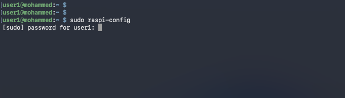
sudo raspi-config and enter your password when prompted for sudo.- This opens a blue-and-white text menu — navigate with the arrow keys, select with Enter, and go back with Tab/Esc.
3Set the Wireless LAN Country
Set this before connecting to Wi-Fi — an incorrect or unset country code can prevent the Wi-Fi radio from connecting at all, so doing this first avoids a confusing failure in the next step.
- From the main menu, select 5 Localisation Options.
- Select L4 WLAN Country.
- Choose your country from the list (e.g. AU Australia) and select Ok.
4Connect to Wi-Fi
- Back at the main menu, select 1 System Options.
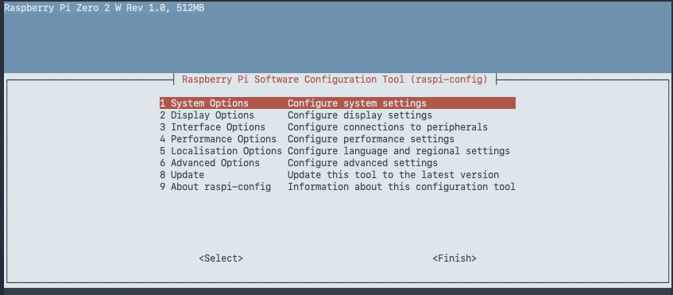
- Select S1 Wireless LAN.
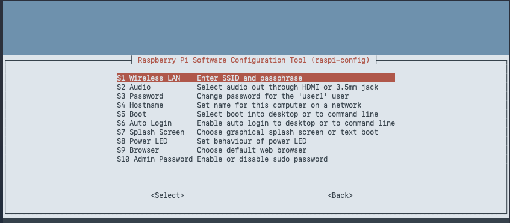
- Enter your network's SSID and select <Ok>.
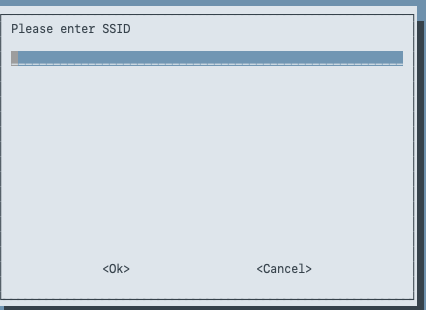
- Enter your Wi-Fi passphrase and select <Ok>.
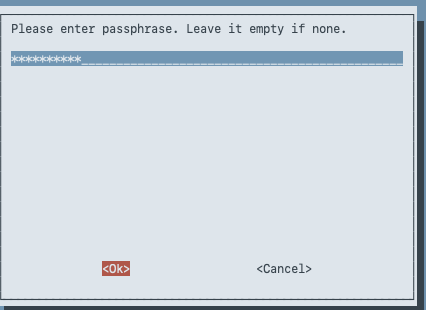
This step applies to the Zero W and Zero 2 W only — the original Pi Zero has no wireless radio and must stay on this monitor/keyboard connection or use a USB Ethernet/OTG network adapter instead.
Exit out of raspi-config, then use nmtui instead:
sudo nmtui- Select Radio and make sure Wi-Fi is enabled.
- Back at the main menu, select Activate a connection.
- Choose your Wi-Fi network (SSID) from the list and select Activate.
- Enter your Wi-Fi password when prompted, then select OK.
- Select Back, then Quit to exit
nmtui.
5Enable SSH
- Back at the main menu, select 3 Interface Options.
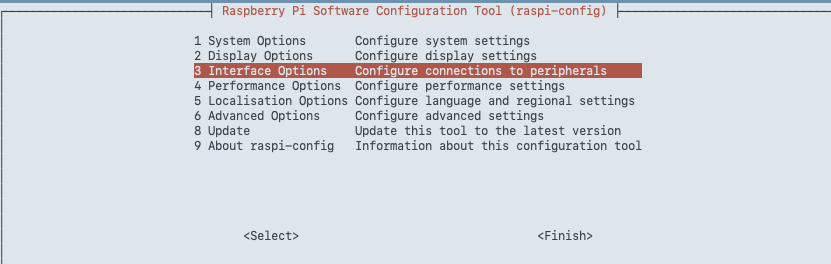
- Select I1 SSH.
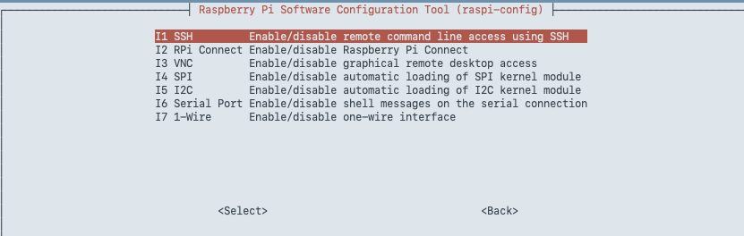
- Choose <Yes> to enable the SSH server.
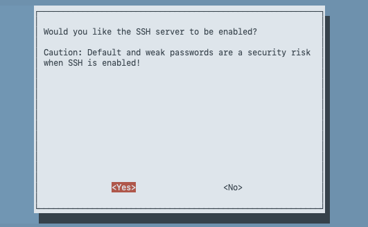
- You'll see a confirmation that SSH is enabled — select <Ok>.
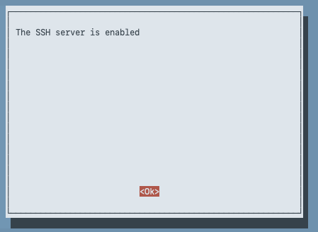
6Finish
- Use Tab/arrow keys to highlight <Finish> and press Enter to exit
raspi-config.
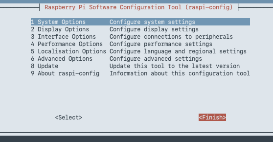
Phase 7: Connecting Remotely
- Before disconnecting the monitor and keyboard, find the Pi's IP address — back at the command prompt, run:
Look for theip ainetaddress under thewlan0section (e.g.192.168.20.34) and note it down. Keep this handy as a fallback in case<hostname>.localdoesn't resolve on your network.
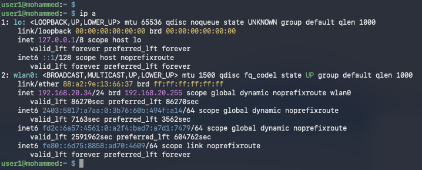
ip a- Reboot the Pi to make sure the new Wi-Fi and SSH settings take effect cleanly:
sudo reboot
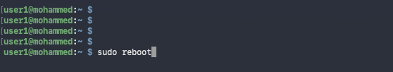
Once it reboots, you can disconnect the monitor and keyboard — the Pi is ready for headless use.
- From your computer, connect via SSH using either the hostname or the IP address you noted in Step 1:
orssh <username>@<hostname>.localssh <username>@<ip-address>
For example, connecting by hostname:
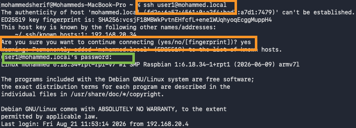
ssh user1@mohammed.local from the computer's terminal.The first time you connect to a given Pi, SSH will warn that "the authenticity of host ... can't be established" and show a key fingerprint. This is normal — it's SSH's way of asking you to trust this device since it's never seen it before. Type yes to continue, then enter the password when prompted. SSH remembers this device afterwards and won't ask again unless the Pi's identity changes (e.g. after re-flashing the SD card).
Or connecting by IP address:
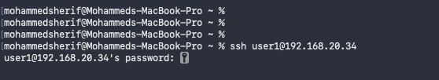
ssh user1@192.168.20.34 from the computer's terminal, then enter the password when prompted.If <hostname>.local does not resolve, use the IP address instead. If that address has since changed (e.g. the Pi got a new DHCP lease after rebooting), run ip a again on the Pi (via monitor/keyboard) or check your router's device list for the current one.
Troubleshooting
- Pi does not boot / no LED activity: Re-check the image was written successfully; try re-flashing.
- No display on monitor: Confirm you're using the mini HDMI port (not the power port) and that the adapter/cable is fully seated; try reconnecting power after the monitor is attached.
- Keyboard not responding: Confirm it's connected via the OTG adapter to the USB data port (not the
PWRport), and try a powered USB hub if the keyboard draws too much current for the Pi to supply. - Can't connect over Wi-Fi: Confirm the SSID/password and Wireless LAN country were set correctly in Phase 6, and that you're using the correct 2.4 GHz network (the Pi Zero W/Zero 2 W do not support 5 GHz).
- "There was an error running option S1 Wireless LAN" in raspi-config: Exit
raspi-configand usesudo nmtuiinstead — select Radio and enable Wi-Fi, then select Activate a connection and choose your network (see Phase 6, Step 4). - SSH connection refused: Confirm SSH was enabled in Phase 6 (raspi-config → Interface Options → I1 SSH), and allow extra time after reboot.
- Hostname doesn't resolve: Not all networks support
.local(mDNS) resolution — find the IP address from your router instead.